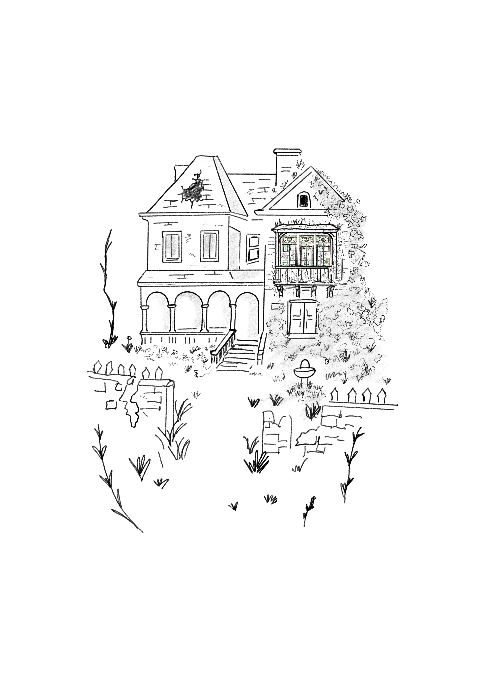

Había una ciudad que a mí me gustaba visitar en verano. En esa época casi todo un
barrio se iba a un balneario cercano. Una de las casas abandonadas era muy antigua; en ella habían instalado un hotel y apenas empezaba el verano la casa se ponía triste, iba perdiendo sus mejores familias y quedaba habitada nada más que por los sirvientes.
